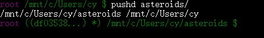

Git的学习笔记咯¶
参考 沉浸式学 Git http://igit.linuxtoy.org/
立即使用¶
在网页上先创建了仓库，设置好.gitignore
git clone github提供的地址(用ssh的) # 现在创建了你的仓库文件夹，将需要上传的文件放进去 cd 你的仓库名称 git add . git commit -a -m "这次改了些啥？" git push
加速git clone¶
方法1：配置一个代理(如privoxy)，并使用https地址
方法2：使用--depth 1参数表示不要复制历史
export https_proxy="http://127.0.0.1:8118" git clone --depth 1 https://github.com/zjuchenyuan/notebook
git push加速¶
代码参见code/ssgit.txt
git push免密码¶
参照http://blog.csdn.net/chfe007/article/details/43388041
首先生成自己的ssh密钥，不要修改生成的文件位置
ssh-keygen -t rsa -b 4096
然后把~/.ssh/id_rsa.pub的内容设置到github中，网页端操作；建议顺带启用两步验证
新手还告诉git自己是谁：
git config --global user.email "你的邮箱" git config --global user.name "你的用户名"
如果当前仓库是https的，改为git方式：
git remote set-url origin git@github.com:用户名/仓库名称.git
bash别名设置¶
通过修改~/.bashrc来设置别名，让git的日常使用更简单：
func_g(){
git add .
git commit -a -m "$1"
git push
}
alias g=func_g
alias gs='git status '
alias ga='git add '
alias gb='git branch '
alias gc='git commit'
alias gd='git diff'
alias go='git checkout '
alias gp='git push'
alias gl="git log --all --pretty=format:'%h %ad | %s%d [%an]' --graph --date=short"

完成一次提交，现在只需要g "提交信息"
要立即生效，可以执行source ~/.bashrc
设置bash中的自动完成与dirty提示¶
此部分内容来自Udacity 如何使用 Git 和 GitHub 课程
下载需要的文件
curl -O https://raw.githubusercontent.com/git/git/master/contrib/completion/git-completion.bash curl -O https://raw.githubusercontent.com/git/git/master/contrib/completion/git-prompt.sh
在~/.bashrc末尾添加：
source ~/git-completion.bash green="\[\033[0;32m\]" blue="\[\033[0;34m\]" purple="\[\033[0;35m\]" reset="\[\033[0m\]" source ~/git-prompt.sh export GIT_PS1_SHOWDIRTYSTATE=1 export PS1="$purple\u$green\$(__git_ps1) \w\a $ $reset"
效果如图，如果出现了未提交的修改，会自动显示出*表示dirty：

好玩的命令们¶
git status¶
查看状态咯~
git reset¶
已经git add了，想取消这一步就用git reset
git checkout¶
啊。。。代码搞坏了我要回滚到上次commit，用git checkout -- 文件名
git reset –soft ¶
撤销到某次commit，但不删除新增文件
其中commit_id可以从git log获得
恢复git reset –hard删除的文件¶
git的历史是不能用命令修改的，丢失的commit用reflog可以找回，除非git已经把它当成垃圾删除（30天）
git stash save git reflog # 查看丢失的那个commit的id git checkout 那个commitid git branch recover # 创建recover分支 git checkout master # 回到master git merge recover # 合并recover到master git branch -d recover # 合并完成后就可以删了
你可能会问的一些问题¶
- 为啥要git add呢?
因为有些时候两个文件可能是不相关的修改，应该分别提交两次
通过分开暂存和提交，你能够更加容易地调优每一个提交。
- 为啥不改.profile而是改.bashrc呢
因为win10中只要有一个bash窗口没关掉，启动bash就不是登录，而是相当于再开了个docker exec -i -t bashonwin10 /bin/bash
此时是不会执行登录脚本.profile的，但是.bashrc还是会执行的
Git各种情景¶
Learned from githug
忽略*.a文件但不想忽略lib.a¶
文档查看：git gitignore --help
!表示负向选择，在.gitignore中添加：
*.a !lib.a
commit补上忘掉的文件¶
如果发现上次commit漏了文件，不应该新加commit而是应该用amend，否则可能上CI就挂
git add forgotten.txt git commit --amend
查出此行代码的最后修改者¶
github提供的blame功能更好看，显示每行代码的作者和来源于哪次commit
git blame filename
文件一次性改太多了，拆成多次commit¶
让每次commit保持在比较小的改动，不要在一个commit中出现两个不那么相关的修改
本知识学习自：10 个迅速提升你 Git 水平的提示
方法是在add的时候给出参数-p
然后git会在每一个修改的block询问是否加入这次的commit，回答y表示加入，n表示不加入，s表示进一步拆分这个block
完成好选择后，使用git diff --staged命令来查询暂存的修改，没有问题就可以继续git commit啦
本地忽略一些个人的修改¶
原文： http://stackoverflow.com/questions/1753070/git-ignore-files-only-locally
有时候我们不想让git追踪一些个人相关的文件，例如config中修改Debug=True，此时如果去修改.gitignore造成的影响是全局的，并且需要从git中删除这个文件；手动避开add config很烦，有没有更好的方法，让git忽略掉config文件的修改呢？
方法是修改.git/info/exclude文件，这个文件的语法规则与.gitignore一样
如果已经造成了修改，还需要执行以下命令：
git update-index --assume-unchanged [<file>...]
本地创建branch后push操作git push -u¶
From: http://stackoverflow.com/questions/2765421/how-do-i-push-a-new-local-branch-to-a-remote-git-repository-and-track-it-too
执行了一些修改引入新功能，但还不能工作，决定建立一个dev分支：
git checkout -b dev
现在再执行git add，git commit后，需要把新的分支push给远程服务器：
git push -u origin dev
用gpg给git提交签名¶
参考：https://help.github.com/articles/signing-commits-with-gpg/
下述以ubuntu16.04（其实是bash on win10）讲解整个过程
安装gpg2¶
查看gpg版本：gpg --version发现版本是gpg (GnuPG) 1.4.20，而教程要求要2以上，所以先要安装gpg2，并告诉git我们要使用gpg2：
apt install -y gpg2 git config --global gpg.program gpg2
创建一个新的key¶
这里github给出的命令有问题，google发现参数改了
gpg2 --full-gen-key
回车选择RSA and RSA，然后输入密钥大小输入4096，然后回车永不过期，确认y，然后输入自己的名字和邮箱 注意这里邮箱要和git commit用到的邮箱一致
导出key的公钥 在github设置中提交¶
gpg2 --list-secret-keys --keyid-format LONG
如下输出中，我们需要的是3AA5C34371567BD2这一串 就是sec那一行的4096R/后面的东西
$ gpg2 --list-secret-keys --keyid-format LONG /Users/hubot/.gnupg/secring.gpg ------------------------------------ sec 4096R/3AA5C34371567BD2 2016-03-10 [expires: 2017-03-10] uid Hubot ssb 4096R/42B317FD4BA89E7A 2016-03-10
然后得到公钥：
gpg2 --armor --export 3AA5C34371567BD2
复制屏幕上输出的一大串，打开下面的网页 粘贴提交
https://github.com/settings/gpg/new
配置git使用gpg签名¶
告诉git默认使用这个key：
git config --global user.signingkey 3AA5C34371567BD2 git config --global commit.gpgsign true
执行 建议将这一行写入~/.bashrc：
export GPG_TTY=$(tty)
然后就是正常的git add .，git commit -m “message”咯
gpg-agent会在后台运行，默认10分钟内不需要再次输入密码
修改gpg要求再次输入密码的时间限制¶
10分钟的默认限制还是太短了，对于安全性要求不高的情景（比如自己的开源代码push到github），不妨设置为密码一直有效，直到gpg-agent重启
下面的设置将限制改到1年，当然gpg-agent重启还是要再次输入密码的：
vi ~/.gnupg/gpg-agent.conf default-cache-ttl 34560000 max-cache-ttl 34560000